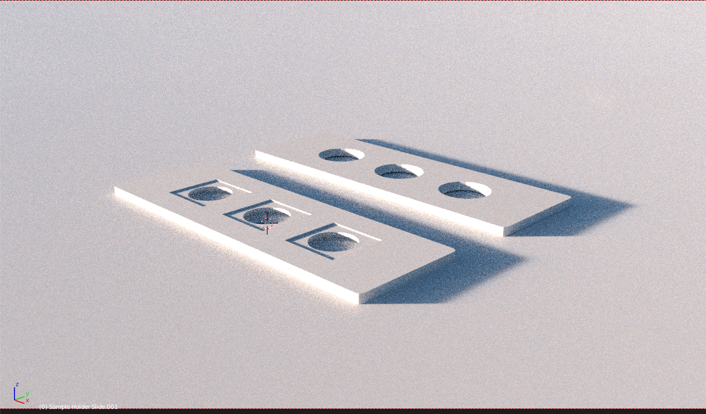
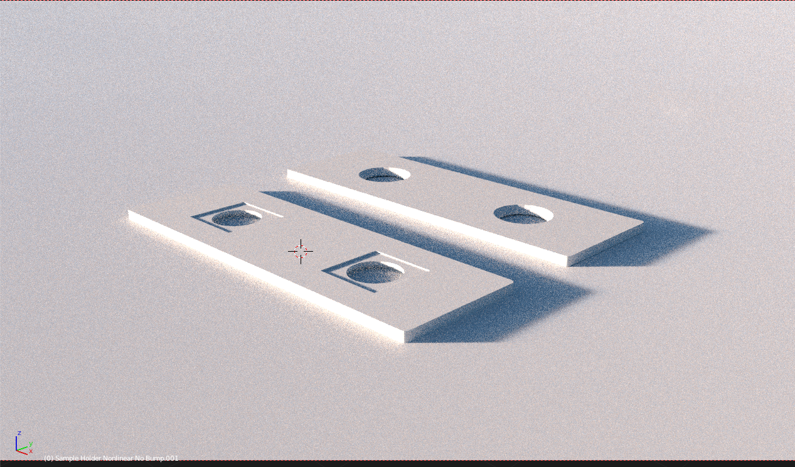
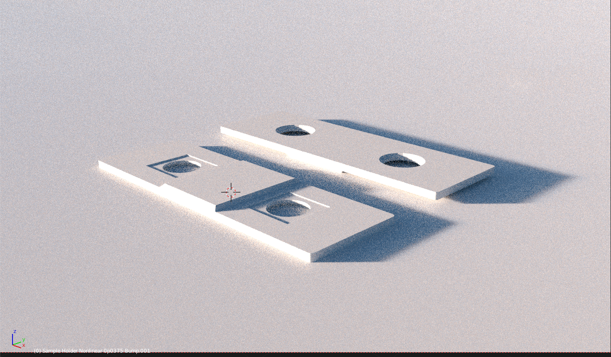
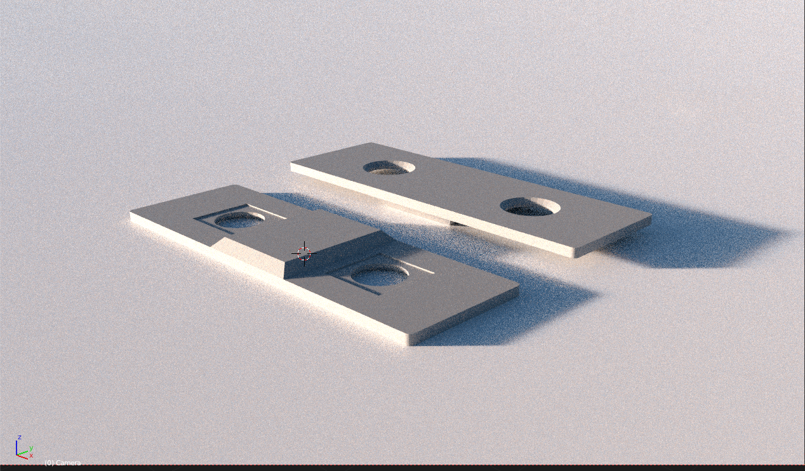

Fixturing micro-fabricated samples for optical analysis in a microscope (especially if you have numerous samples) can be a hassle because most means either require the purchase of specially manufactured slides that have a single hole cut out of them or trying to fiddle around using a normal glass microscope slide with the sample taped or otherwise adhered onto the edge of the slide. Instead of all that, we can create all sorts of modular sample holders in the familiar microscope slide footprint with the use of a 3D printer.
Attached below are several varieties if sample holder slides that I use for my own research in optical materials and devices. These sample holder sides are designed to be in the 1 inch by 3 inch format and thickness of normal glass microscope slides while having some nice features like optical pass-throughs which are chamfered on one side and recessed on the other so that the samples are retained positively within the cutout recess. The sample holder slides are designed to be used with reflection and transmission mode spectroscopy in an inverted Zeiss Axiovert microscope however they should be more or less universal. The sample recesses are designed for 1 cm x 1 cm samples like sapphire or similar.
The following sample holder is most practical for general usage and can also be placed inside of most microscope slide mailers and organizers for easy cataloging and transport:
Source files are available here in .stl format and here in FreeCAD format.
The three following sample holders are useful for vertical or horizontal fork-style sample holders like you might find in free space optics. These we use very frequently in our free space optical systems like our Z-scan setup for nonlinear measurements:
Source files are available here in .stl format and here in FreeCAD format.
Source files are available here in .stl format and here in FreeCAD format.
Source files are available here in .stl format and here in FreeCAD format.